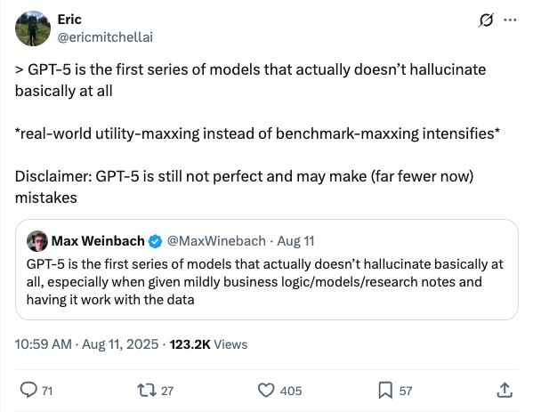

ericmitchellai_GPT-5幻觉问题显著改善
发布时间: 2025-08-11T02:59:23.000Z 推文指出，GPT-5是首个基本不产生幻觉的模型系列，尤其在处理商业逻辑、模型或研究笔记数据时表现出色。这标志着AI发展从单纯追求基准测试分数转向更注重实际应用效用。尽管GPT-5并非完美，但其错误率已大幅降低，预示着大模型在可靠性方面取得重大突破。
2025-08-11
推文指出，GPT-5是首个基本不产生幻觉的模型系列，尤其在处理商业逻辑、模型或研究笔记数据时表现出色。这标志着AI发展从单纯追求基准测试分数转向更注重实际应用效用。尽管GPT-5并非完美，但其错误率已大幅降低，预示着大模型在可靠性方面取得重大突破。
Percy Liang宣布HELM v1.12.0已集成GPT-5和GPT-5 mini。值得注意的是，GPT-5 mini在Omni-MATH基准测试中表现优于GPT-5，原因在于GPT-5消耗更多推理tokens且难以控制，易超出14096的预算限制。这凸显了进行公平模型评估的复杂性与挑战。
知名AI研究员François Chollet指出，尽管前沿大型语言模型具备超人类文本世界知识，前沿图像/视频模型拥有超人类视觉世界知识，但当前前沿视觉语言模型（VLMs）表现不佳。他认为，这主要是由于图像与文本配对数据的相对稀缺性所致，而文本和图像/视频数据本身则非常丰富。
Meta FAIR的脑与AI团队在2025年Algonauts脑建模大赛中荣获第一名。他们推出的10亿参数TRIBE（三模态脑编码器）模型，是首个能预测跨模态、跨皮层区域及个体脑反应的深度神经网络。该模型结合了Meta的Llama 3.2、Wav2Vec2-BERT和V-JEPA 2等基础模型，用于预测电影刺激下的大量时空fMRI脑反应数据。
OpenAI研究员Noam Brown和Sheryl Hsu宣布，OpenAI的推理系统在2025年国际信息学奥林匹克竞赛（IOI）中获得金牌，位列AI参赛者之首。值得注意的是，该模型同时也是OpenAI在国际数学奥林匹克竞赛（IMO）中获得金牌的模型，并被认为是其最佳的竞技编程模型。这标志着OpenAI在AI推理和通用能力方面取得重大突破。
Anima Anandkumar教授宣布LeanDojo迎来重大更新，推出Lean+LLM形式化数学推理框架。此次更新包括Lean4Code集成开发环境、LeanCopilot神经网络推理系统（支持本地及云端LLM，兼容DeepSeek/Kimina Prover）和LeanAgent终身学习框架。Lean在AI解决国际数学奥林匹克挑战中发挥关键验证作用，LeanDojo作为首个开源框架，旨在推动Lean与LLM结合，解决LLM在长证明中幻觉问题，确保数学推理的严谨性。
《2025全球大模型应用报告》揭示，2025年上半年大模型已从技术前沿走向生产实践，45%的企业已将其部署到生产环境，工程研发、客户支持和营销成为主要应用场景。报告指出，用户平均使用4.7个大模型，市场处于红海竞争，品牌忠诚度低。挑战主要包括模型知识水平不足、幻觉问题及高昂成本。尽管OpenAI保持领先，谷歌Gemini和Deepseek进步显著。中国大模型在海外市场面临部署地域限制。英伟达在训练硬件市场占据主导地位。报告强调，可靠性、成本和智能水平仍是AI落地的主要障碍。
智谱AI最新开源的GLM-4.5V视觉推理模型，在41个公开视觉多模态榜单中达到同级别开源模型SOTA性能，展现出卓越的多模态能力。该模型基于GLM-4.5基座，拥有106B总参数，核心亮点包括高精度看图猜地址（GeoGuessr）、清明上河图Grounding能力、视频理解与网页复刻代码生成，以及强大的空间关系理解和复杂图表解析。GLM-4.5V通过三阶段训练策略优化，支持64K多模态长上下文，并提供高性价比API服务，标志着多模态大模型从能力验证迈向规模化落地，引领AI视觉推理新方向。
TPAMI 2025论文提出DAPT框架，旨在解决视觉-语言模型（VLM）提示调优中的“信息不对称”难题。该方法通过“先解耦后对齐”的核心思想，将图像前景与背景分离，并分别与文本进行对称对齐，有效避免了模型注意力偏差。DAPT引入视觉拉推正则化，强制模型聚焦感兴趣区域。实验证明，DAPT在小样本学习、数据高效学习及基类到新类泛化等11项任务上均刷新SOTA，仅用50%训练数据即可超越现有方法，为VLM高效利用和多模态对齐提供了新范式。
文章探讨了OpenAI与xAI在AI产品策略上的显著差异。OpenAI因移除GPT-4o引发用户强烈“戒断反应”，Sam Altman承认此举失误，并解释OpenAI旨在通过“克制”和“边界清晰”的产品设计，防止用户对AI过度依赖甚至成瘾，强调AI应服务于用户长期利益而非无限制取悦。与此形成对比的是，马斯克宣布Grok 4全球免费，并采用“热辣模式”和拟人化角色等策略，旨在通过高刺激、高频互动实现用户高留存。这反映了AI发展中“赋能”与“沉迷”的伦理争议，以及不同公司对人机关系的不同理解。
OpenAI在gpt-oss模型中引入MXFP4数据类型，显著降低了推理成本75%，并将token生成速度提升四倍。MXFP4将内存占用降至BF16模型的四分之一，使得1200亿参数大模型可在80GB显存上运行，大幅提升了硬件利用率。该技术通过优化权重存储和内存带宽，在保证精度的前提下实现极致压缩，有效解决了低精度量化中的精度损失问题。此举不仅大幅降低了大型语言模型的运行成本，也为AI模型的高效部署提供了新的解决方案，预示着AI推理领域将迎来更经济高效的时代。
浪潮信息发布新一代AI超节点“元脑SD200”，旨在应对万亿参数大模型及Agentic AI范式下计算与通信的爆炸式增长挑战。该超节点创新性地将64张GPU卡融合成一个统一内存、统一编址的计算域，通过3D Mesh开放架构和远端GPU虚拟映射技术，实现了4TB显存与64TB内存的超大资源池，并提供百纳秒级低延迟通信。元脑SD200支持单机同时运行DeepSeek R1、Kimi K2等四大国产开源模型，实现超万亿参数大模型推理及多智能体实时协作的超线性扩展性能。其开放的软硬件生态兼容主流框架，降低迁移成本，致力于推动AI智能平权。

我们提出了GLM-4.5，一个开源的混合专家（MoE）大型语言模型，总参数量为3550亿，激活参数量为320亿，其特点是支持思维和直接响应模式的混合推理方法。通过对23万亿tokens进行多阶段训练，并结合专家模型迭代和强化学习进行全面的后训练，GLM-4.5在智能体、推理和编码（ARC）任务上取得了强大性能，在TAU-Bench上得分70.1%，在AIME 24上得分91.0%，在SWE-bench Verified上得分64.2%。尽管参数量远少于几个竞争对手，GLM-4.5在所有评估模型中总体排名第3，在智能体基准测试中排名第2。我们发布了GLM-4.5（3550亿参数）和紧凑版GLM-4.5-Air（1060亿参数），以推动推理和智能体AI系统的研究。代码、模型和更多信息可在https://github.com/zai-org/GLM-4.5获取。

基于大语言模型（LLM）的智能体在各种任务中表现出色，但它们受限于脆弱的程序记忆，这种记忆通常是手动设计或与静态参数纠缠在一起。在这项工作中，我们研究了赋予智能体可学习、可更新且终身程序记忆的策略。我们提出了 Memp，它将过去的智能体轨迹提炼成细粒度的分步指令和更高层次的脚本式抽象，并探讨了程序记忆的构建、检索和更新不同策略的影响。结合持续更新、纠正和废弃其内容的动态机制，该记忆库与新经验同步演进。在 TravelPlanner 和 ALFWorld 上的实证评估表明，随着记忆库的完善，智能体在类似任务上取得了持续更高的成功率和更高的效率。此外，从更强模型构建的程序记忆保留了其价值：将程序记忆迁移到较弱的模型也能带来显著的性能提升。

多模态大型语言模型（MLLMs）的出现推动了利用纯视觉输入在图形用户界面（GUIs）上操作的自主智能体的发展。一个基本挑战是稳健地将自然语言指令进行接地。这需要精确的空间对齐，即准确地定位每个元素的坐标，更关键的是，需要正确的语义对齐，即将指令与功能上合适的UI元素进行匹配。尽管带有可验证奖励的强化学习（RLVR）已被证明能有效改善这些MLLMs的空间对齐，但我们发现低效的探索瓶颈限制了语义对齐，这阻碍了模型学习困难的语义关联。为了解决这个探索问题，我们提出了自适应探索策略优化（AEPO），这是一个新的策略优化框架。AEPO采用多答案生成策略来强制进行更广泛的探索，然后由基于效率第一性原理eta=U/C推导出的理论基础的自适应探索奖励（AER）函数进行引导。我们经过AEPO训练的模型InfiGUI-G1-3B和InfiGUI-G1-7B在多个具有挑战性的GUI接地基准测试中取得了新的最先进结果，在旨在测试泛化和语义理解的基准测试中，相对于朴素的RLVR基线实现了高达9.0%的显著相对改进。资源可在https://github.com/InfiXAI/InfiGUI-G1获取。

创造出像《钢铁侠》中虚构的J.A.R.V.I.S一样强大且多功能的AI助手，这一梦想长期以来一直吸引着人们的想象。随着（多模态）大语言模型（(M)LLMs）的演进，这一梦想正变得更接近现实，因为基于(M)LLM的智能体通过在操作系统（OS）提供的环境和接口（例如图形用户界面（GUI））中操作，利用计算设备（例如计算机和手机）来自动化任务，已经取得了显著进展。本文对这些先进的智能体（统称为操作系统智能体）进行了全面综述。我们首先阐明了操作系统智能体的基本原理，探讨了其关键组成部分，包括环境、观察空间和动作空间，并概述了理解、规划和基础等基本能力。接着，我们考察了构建操作系统智能体的方法，重点关注领域特定基础模型和智能体框架。对评估协议和基准的详细回顾突出了操作系统智能体如何在各种任务中进行评估。最后，我们讨论了当前挑战，并指出了未来研究的有前景方向，包括安全与隐私、个性化和自我演进。本综述旨在整合操作系统智能体研究的现状，为学术探究和工业发展提供指导。我们维护了一个开源GitHub仓库，作为动态资源以促进该领域的进一步创新。我们展示了我们工作的9页版本，已被ACL 2025接受，旨在为该领域提供一个简洁的概述。

视觉语言模型（VLM）在整合语言和视觉推理方面展现出卓越能力，但在理解动态时空交互方面仍存在根本性局限。人类能够毫不费力地跟踪和推理物体的运动、旋转和视角变化——这些能力对于稳健的动态真实世界理解至关重要，但当前VLM却显著缺乏。在本文中，我们引入了VLM4D，这是首个专门用于评估VLM时空推理能力的基准。我们的基准包含多样化的真实世界和合成视频，并附有精心策划的问答对，重点强调平移和旋转运动、视角感知以及运动连续性。通过对最先进的开源和闭源VLM进行全面评估，我们发现与人类基线相比存在显著的性能差距，这突显了现有模型的根本性缺陷。广泛分析表明，VLM在整合多个视觉线索和保持时间连贯性方面尤其困难。我们进一步探索了有前景的方向，例如利用4D特征场重建和有针对性的时空监督微调，证明了它们在增强时空理解方面的有效性。我们的工作旨在鼓励更深入地探索如何改进VLM的空间和时间基础，为动态环境中更强大、更可靠的视觉智能铺平道路。

我们提出了MeshLLM，一个新颖的框架，它利用大型语言模型（LLMs）来理解和生成文本序列化的三维网格。我们的方法解决了现有方法的关键局限性，包括在适应LLMs的token长度时数据集规模有限，以及网格序列化过程中三维结构信息的丢失。我们引入了一种原始网格分解策略，将三维网格划分为结构上有意义的子单元。这使得能够创建一个包含150万以上样本的大规模数据集，比以前的方法大近50倍，这更符合LLM的扩展定律原则。此外，我们提出了从顶点推断面连接性以及局部网格组装训练策略，显著增强了LLMs捕获网格拓扑和空间结构的能力。实验表明，MeshLLM在网格生成质量和形状理解方面均优于最先进的LLaMA-Mesh，突显了其在处理文本序列化三维网格方面的巨大潜力。